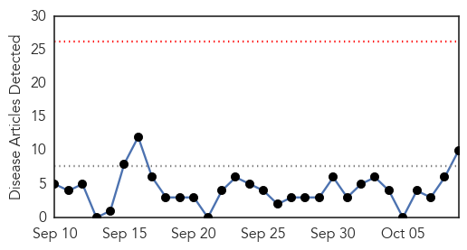
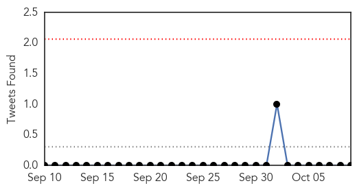
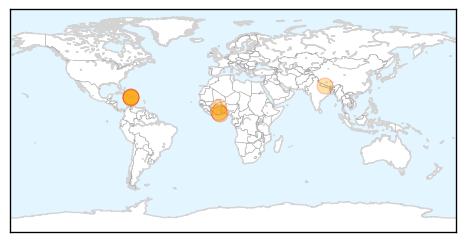
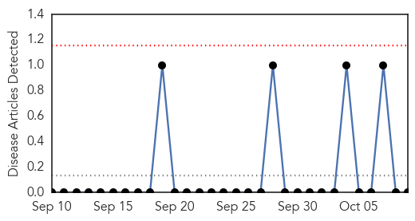

Cholera
30-Day Web Trend
0 alerts, 0 warnings

30-Day Twitter Trend
0 alerts, 0 warnings

Article Locations
Article Confidences

Top Articles:
- 0.999
- We Will Eradicate Cholera In Four Weeks - Deputy Health Minister Assures
- 0.993
- Bechem Records 2 Cholera Deaths
- 0.990
- Ahead of Haiti Donor Conference WBG Pledges US$50 Million in Water and Sanitation - Haiti
- 0.987
- Weakening Response to Haiti Cholera Outbreak Could Have Disastrous Consequences
- 0.979
- World Bank Chiefs & And UN Calls For Support For Haiti?
- 0.940
- Ahead of Haiti Donor Conference WBG pledges US$50M in water, sanitation
- 0.888
- Health : New $50M donation from the World Bank for Water and Sanitation
- 0.799
- Bolgatanga Regional Hospital records 35 cholera cases
- 0.780
- Haiti PM Visits Washington
- 0.704
- Asante-Akim South acts to prevent cholera
Top Tweets:
-
No tweets found for Oct 09, 2014
Mold/Fungal
30-Day Web Trend
0 alerts, 0 warnings

30-Day Twitter Trend
0 alerts, 0 warnings

Article Locations

Article Confidences

Top Articles:
-
No articles found for Oct 09, 2014
Top Tweets:
-
No tweets found for Oct 09, 2014